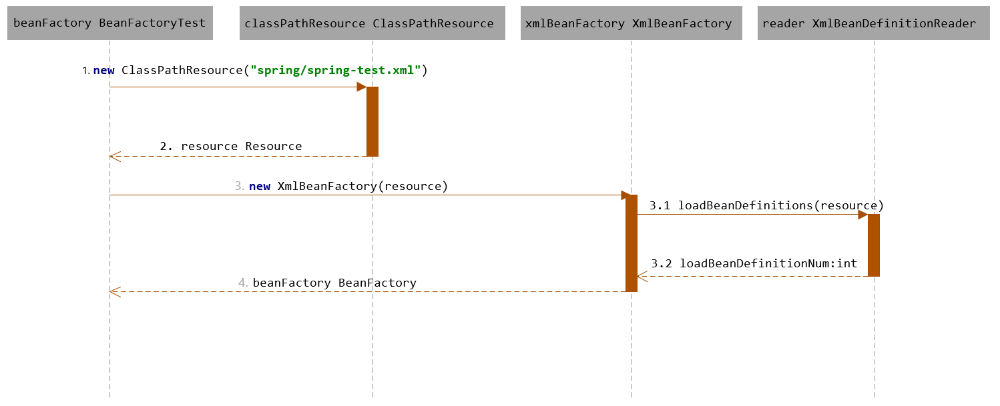
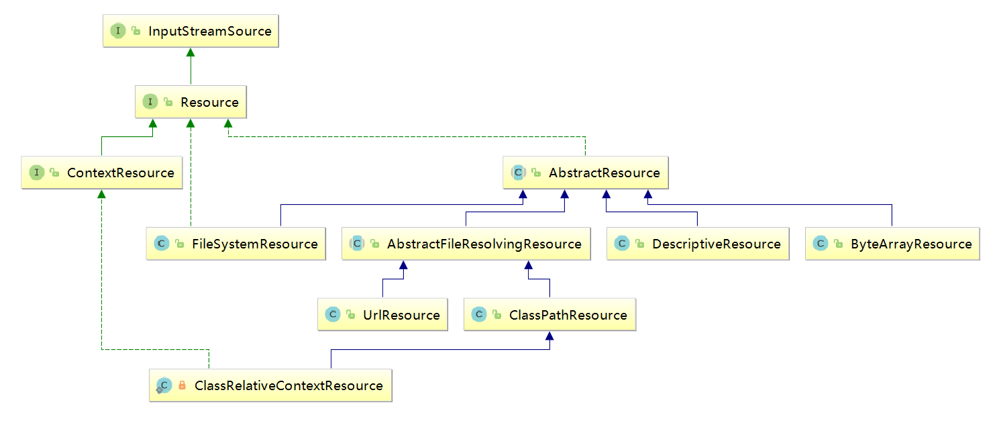
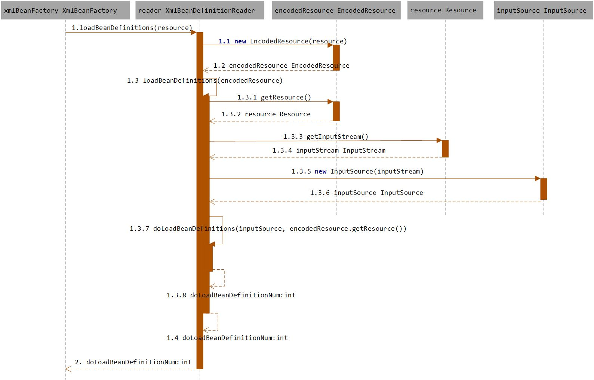

Spring源码分析（04）容器的基础XmlBeanFactory
Spring源码分析（四）容器的基础XmlBeanFactory
摘要：本文结合《Spring源码深度解析》来分析Spring 5.0.6版本的源代码。若有描述错误之处，欢迎指正。
经过Spring源码分析（二）容器基本用法和Spring源码分析（三）容器核心类两篇文章，我们已经对Spring的容器功能有了一个大致的了解，尽管你可能还很迷糊，但是不要紧，接下来我们会详细探索每个步骤的实现。首先要深入分析的是以下功能的代码实现：
BeanFactory beanFactory = new XmlBeanFactory(new ClassPathResource("spring/spring-test.xml"));通过XmlBeanFactory初始化时序图，我们看下上面代码的执行逻辑：

时序图从BeanFactoryTest测试类开始，通过时序图我们可以一目了然地看到整个逻辑处理顺序。先调用了ClassPathResource的构造函数来构造Resource资源文件的实例对象，后续的资源处理就可以用Resource提供的各种服务来操作了，当我们有了Resource后就可以进行XmlBeanFactory的初始化了。那么Resource文件是如何封装的呢？
1. 配置文件封装
Spring的配置文件读取是通过ClassPathResource进行封装的，如new ClassPathResource(“spring/spring-test.xml”)，那么ClassPathResource完成了什么功能呢？
在Java中，将不同来源的资源抽象成URL，通过注册不同的handler(URLStreamHander)来处理不同来源的资源的读取逻辑，一般handler的类型使用不同的前缀（协议，Protocol）来识别，如“file:”、”http:”、”jar：”等，然而URL没有默认定义相对Classpath或ServletContext等资源的handler，虽然可以注册自己的URLStreamHandler来解析特定的URL前缀（协议），比如“classpath:”，然而这需要了解URL的实现机制，而且URL也没有提供一些基本的方法，如检查当前资源是否存在、检查当前资源是否可读等方法。因而Spring对其内部使用到的资源实现了自己的抽象结构：Resource接口来封装底层资源。
public interface InputStreamSource {
InputStream getInputStream() throws IOException;
}public interface Resource extends InputStreamSource {
boolean exists();
default boolean isReadable() {
return true;
}
default boolean isOpen() {
return false;
}
default boolean isFile() {
return false;
}
URL getURL() throws IOException;
URI getURI() throws IOException;
File getFile() throws IOException;
default ReadableByteChannel readableChannel() throws IOException {
return Channels.newChannel(getInputStream());
}
long contentLength() throws IOException;
long lastModified() throws IOException;
Resource createRelative(String relativePath) throws IOException;
@Nullable
String getFilename();
String getDescription();
}InputStreamSource封装任何能返回InputStream的类，比如File、Classpath下的资源和Byte Array等。它只有一个方法定义：getInputStream()，该方法返回一个新的InputStream对象。
Resource接口抽象了所有Spring内部使用到的底层资源：File、URL、Classpath等。首先，它定义了3个判断当前资源状态的方法：存在性（exists）、可读性（isReadable）、是否处于打开状态（isOpen）。另外，Resource接口还提供了不同资源到URL、URI、File类型的转换，以及获取lastModified属性、文件名（不带文件信息的文件名，getFilename()）的方法。为了便于操作，Resource还提供了基于当前资源创建一个相对资源的方法：createRelative()。在错误处理中需要详细地打印出错的资源文件，因而Resource还提供了getDescription()方法用于在错误处理中的打印信息。
对不同来源的资源文件都有相应的Resource实现：文件（FileSystemResource）、Classpath资源（ClasspathResource）、URL资源（URLResource）、InputStream资源（InputStreamResource）、Byte数组（ByteArrayResource）等。相关类图如下图所示：

在日常的开发工作中，资源文件的加载也是经常用到的，可以直接使用Spring提供的类，比如在希望加载文件时可以使用以下代码：
Resource resource = new ClassPathResource("spring/spring-test.xml.xml");
InputStream inputStream = resource.getInputStream();得到inputStream后，我们可以按照以前的开发方式进行实现了，并且我们已经可以利用Resource及其子类为我们提供好的诸多特性。
有了Resource接口便可以对所有资源文件进行统一处理。至于实现，其实是非常简单的，以getInputStream为例，ClassPathResource中的实现方式便是通过class或者classLoader提供的底层方法进行调用，而对于FileSystemResource的实现其实更简单，直接使用FileInputStream对文件进行实例化。
ClassPathResource.java
/**
* This implementation opens an InputStream for the given class path resource.
* @see java.lang.ClassLoader#getResourceAsStream(String)
* @see java.lang.Class#getResourceAsStream(String)
*/
@Override
public InputStream getInputStream() throws IOException {
InputStream is;
if (this.clazz != null) {
is = this.clazz.getResourceAsStream(this.path);
}
else if (this.classLoader != null) {
is = this.classLoader.getResourceAsStream(this.path);
}
else {
is = ClassLoader.getSystemResourceAsStream(this.path);
}
if (is == null) {
throw new FileNotFoundException(getDescription() + " cannot be opened because it does not exist");
}
return is;
}FileSystemResource.java
/**
* This implementation opens a NIO file stream for the underlying file.
* @see java.io.FileInputStream
*/
@Override
public InputStream getInputStream() throws IOException {
try {
return Files.newInputStream(this.file.toPath());
}
catch (NoSuchFileException ex) {
throw new FileNotFoundException(ex.getMessage());
}
}当通过Resource相关类完成了对配置文件进行封装后配置文件的读取工作就全权交给XmlBeanDefinitionReader来处理了。
了解了Spring中将配置文件封装为Resource类型的实例方法后，我们就可以继续探讨XmlBeanFactory的初始化方法了，XmlBeanFactory初始化有许多方法，Spring中提供了很多的构造函数，在这里分析的是使用Resource实例作为构造函数参数的方法，代码如下：
/**
* Create a new XmlBeanFactory with the given resource,
* which must be parsable using DOM.
* @param resource the XML resource to load bean definitions from
* @throws BeansException in case of loading or parsing errors
*/
public XmlBeanFactory(Resource resource) throws BeansException {
// 调用XmlBeanFactory(Resource resource, BeanFactory parentBeanFactory)构造方法
this(resource, null);
}
/**
* Create a new XmlBeanFactory with the given input stream,
* which must be parsable using DOM.
* @param resource the XML resource to load bean definitions from
* @param parentBeanFactory parent bean factory
* @throws BeansException in case of loading or parsing errors
*/
// parentBeanFactory为父类BeanFactory用于factory合并，可以为空
public XmlBeanFactory(Resource resource, BeanFactory parentBeanFactory) throws BeansException {
super(parentBeanFactory);
this.reader.loadBeanDefinitions(resource);
}上面函数的代码中，this.reader.loadBeanDefinitions(resource)才是资源加载的真正实现，也是我们分析的重点之一。我们可以看到时序图中提到的XmlBeanDefinitionReader加载数据就是这里完成的，但是在XmlBeanDefinitionReader加载数据前还有一个调用父类构造函数初始化的过程：super(parentBeanFactory)，跟踪代码到父类AbstractAutowireCapableBeanfactory的构造函数中：
/**
* Create a new AbstractAutowireCapableBeanFactory.
*/
public AbstractAutowireCapableBeanFactory() {
super();
ignoreDependencyInterface(BeanNameAware.class);
ignoreDependencyInterface(BeanFactoryAware.class);
ignoreDependencyInterface(BeanClassLoaderAware.class);
}这里有必要提及下ignoreDependencyInterface方法。ignoreDependencyInterface的主要功能，是忽略给定接口的自动装配功能，那么，这样做的目的是什么呢？会产生什么样的效果呢？
举例来说，当A中有属性B，那么当Spring在获取A的Bean的如果其属性B还没有初始化，那么Spring会自动初始化B，这也是Spring提供的一个重要特性。但是，某些情况下B不会被初始化，其中的一种情况就是B实现了BeanNameAware接口。Spring中是这样介绍的，自动装配的时候，忽略给定的依赖接口，典型的应用是通过其他方式解析Application上下文注册依赖，类似于BeanFactory通过BeanFactoryAware进行注入或者ApplicationContext通过ApplicationContextAware进行注入。
2. 加载Bean
之前提到的在XmlBeanFactory构造函数中调用了XmlBeanDefinitionReader类型的reader属性提供的方法this.reader.loadBeanDefinitions(resource)，而这句代码则是整个资源加载的切入点，我们先来看看这个方法的时序图，如下图所示：

看到上图我们才知道，原来绕了这么久还没有切入正题，还一直在为加载XML文件和解析注册Bean在做准备工作。从上面的时序图中我们尝试梳理整个的处理过程如下：
- 封装资源文件。当进入XmlBeanDefinitionReader后首先对参数Resource使用EncodeResource类进行封装。
- 获取输入流。从Resource中获取对应的InputStream并构造InputSource。
- 通过构造的InputSource实例和Resource实例继续调用函数doLoadBeanDefinitions。
我们来看一下loadBeanDefinitions函数具体的实现过程：
/**
* Load bean definitions from the specified XML file.
* @param resource the resource descriptor for the XML file
* @return the number of bean definitions found
* @throws BeanDefinitionStoreException in case of loading or parsing errors
*/
@Override
public int loadBeanDefinitions(Resource resource) throws BeanDefinitionStoreException {
return loadBeanDefinitions(new EncodedResource(resource));
}那么EncodeResource的作用是什么呢？通过名称，我们可以大致推断这个类主要是用于对资源文件的编码进行处理。其中的主要逻辑体现在getReader()方法中，当设置了编码属性的时候Spring会使用相应的编码作为输入流的编码。
/**
* Open a {@code java.io.Reader} for the specified resource, using the specified
* {@link #getCharset() Charset} or {@linkplain #getEncoding() encoding}
* (if any).
* @throws IOException if opening the Reader failed
* @see #requiresReader()
* @see #getInputStream()
*/
public Reader getReader() throws IOException {
if (this.charset != null) {
return new InputStreamReader(this.resource.getInputStream(), this.charset);
}
else if (this.encoding != null) {
return new InputStreamReader(this.resource.getInputStream(), this.encoding);
}
else {
return new InputStreamReader(this.resource.getInputStream());
}
}上面代码构造了一个有编码（encoding）的InputStreamReader。当构造好encodeResource对象后，再次转入了可复用方法loadBeanDefinitions(new EncodedResource(resource))。
这个方法内部才是真正的数据准备阶段，也就是时序图所描述的逻辑：
public int loadBeanDefinitions(EncodedResource encodedResource) throws BeanDefinitionStoreException {
Assert.notNull(encodedResource, "EncodedResource must not be null");
if (logger.isDebugEnabled()) {
logger.debug("Loading XML bean definitions from " + encodedResource.getResource());
}
// 通过属性来记录已经加载的资源
Set<EncodedResource> currentResources = this.resourcesCurrentlyBeingLoaded.get();
if (currentResources == null) {
currentResources = new HashSet<>(4);
this.resourcesCurrentlyBeingLoaded.set(currentResources);
}
if (!currentResources.add(encodedResource)) {
throw new BeanDefinitionStoreException(
"Detected cyclic loading of " + encodedResource + " - check your import definitions!");
}
try {
// 从encodedResource中获取已经封装的Resource对象并再次从Resource中获取其中的inputStream
InputStream inputStream = encodedResource.getResource().getInputStream();
try {
// InputSource这个类并不是来自于Spring，他的全路径是org.xml.sax.InputSource
InputSource inputSource = new InputSource(inputStream);
if (encodedResource.getEncoding() != null) {
inputSource.setEncoding(encodedResource.getEncoding());
}
// 真正进入了逻辑核心部分
return doLoadBeanDefinitions(inputSource, encodedResource.getResource());
}
finally {
// 关闭输入流
inputStream.close();
}
}
catch (IOException ex) {
throw new BeanDefinitionStoreException(
"IOException parsing XML document from " + encodedResource.getResource(), ex);
}
finally {
currentResources.remove(encodedResource);
if (currentResources.isEmpty()) {
this.resourcesCurrentlyBeingLoaded.remove();
}
}
}我们再次准备一下数据准备阶段的逻辑，首先对传入的resource参数做封装，目的是考虑到Resource可能存在编码要求的情况，其次，通过SAX读取XML文件的方式来准备InputSource对象，最后将准备的数据通过参数传入真正的核心处理部分doLoadBeanDefinitions（inputSource, encodedResource.getResource()）。
protected int doLoadBeanDefinitions(InputSource inputSource, Resource resource)
throws BeanDefinitionStoreException {
try {
Document doc = doLoadDocument(inputSource, resource);
return registerBeanDefinitions(doc, resource);
}
catch (BeanDefinitionStoreException ex) {
throw ex;
}
catch (SAXParseException ex) {
throw new XmlBeanDefinitionStoreException(resource.getDescription(),
"Line " + ex.getLineNumber() + " in XML document from " + resource + " is invalid", ex);
}
catch (SAXException ex) {
throw new XmlBeanDefinitionStoreException(resource.getDescription(),
"XML document from " + resource + " is invalid", ex);
}
catch (ParserConfigurationException ex) {
throw new BeanDefinitionStoreException(resource.getDescription(),
"Parser configuration exception parsing XML from " + resource, ex);
}
catch (IOException ex) {
throw new BeanDefinitionStoreException(resource.getDescription(),
"IOException parsing XML document from " + resource, ex);
}
catch (Throwable ex) {
throw new BeanDefinitionStoreException(resource.getDescription(),
"Unexpected exception parsing XML document from " + resource, ex);
}
}上面的代码只做了两件事，每一件都是必不可少的。
- 加载XML文件，并得到对应的Document。
- 根据返回的Document注册Bean信息。
这两个步骤支撑着整个Spring容器部分的实现基础，尤其是第二部对配置文件的解析，逻辑非常复杂，下一节里面先从获取Document讲起。
文章标题:Spring源码分析（04）容器的基础XmlBeanFactory
文章字数:2.7k
本文作者:莫问-廖远佩
版权声明: 内容非商用，仅作为学习记录之用若有侵权请联系：liaoyuanpei@foxmail.com。
 陕公安备案61092402000103号 |©2020 莫问-廖远佩
陕公安备案61092402000103号 |©2020 莫问-廖远佩